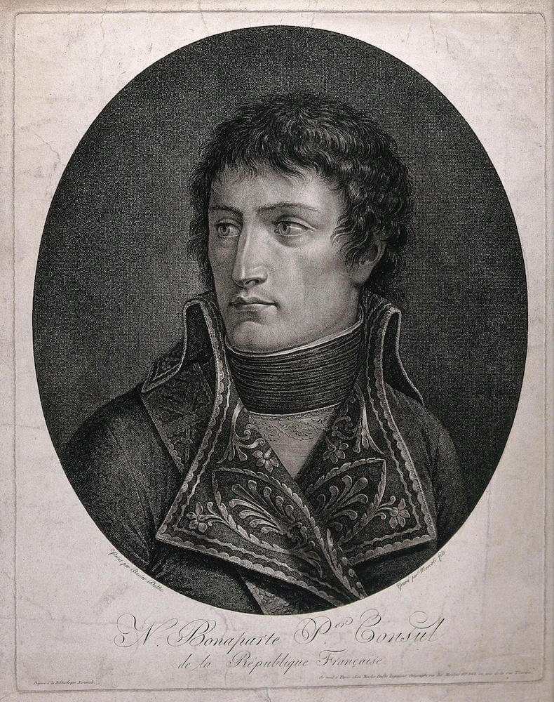

Napoléon's journey today is a series of roads that in 1932 officially became Route Napoléon RN 85. Previously called the Winter Alps Route, the 314-kilometre tourist route is marked along the way with commemorative plaques and monuments and is open all year. While today the route is on modern roads and takes various diversions from the original, it still passes through the beauty of the Alpes-Maritimes, Alpes-de-Haute-Provence, Hautes-Alpes and Isère departments.
History
Napoléon Bonaparte was a French military and political leader born on the 15th of August 1769. He rose to prominence during the French Revolution eventually becoming emperor of the French from 1804 until 1814, and again in 1815. As emperor, he dominated global affairs during his reign and led France in the Napoléonic Wars against other countries and coalitions. He was victorious in the majority of these wars, building a large empire that ruled over continental Europe before its collapse in 1815.
Napoléon was one of the greatest commanders in history and his campaigns are studied at military schools worldwide. He died on the 5th May 1821 whilst exiled to the island of Saint Helena off the coast of Africa. In 1840 his body was returned to Paris, where it was interred in the Hotel des Invalides.
Exile to Elba
Although Napoléon was successful in many battles, towards the end of his reign his armies suffered a catastrophic campaign in Russia. Seizing on this as a sign that the emperor was no longer invincible, Prussia allied with Great Britain and Sweden, followed later by Austria and the “War of Liberation” began. Napoléon retreated to Paris where his ongoing political weakness became untenable with the governing parties. The allies offered peace but Napoléon rejected it and Paris fell in 1814. The French were no longer willing to support Napoléon and he was forced to sign the Treaty of Fontainebleau ending his rule.
As part of this treaty, Napoléon was exiled to the Italian island of Elba where he received sovereignty over the island which allowed him to retain the title of emperor. He arrived at Portoferraio on the 30th May 1814 and within a few months created a small navy and army, developed mines, constructed new roads and overhauled the island's legal and educational systems. A few months into his exile, Napoléon was devastated by the news that his ex-wife Josephine had died in France and planned his return to France.
Return to France
Less than a year into his exile Napoléon made a dramatic escape, slipping away from Portoferraio on board the brig 'l'Inconstant' with 1,200 men, evading the patrolling English and French fleet that surrounded the island.
On the Ist March, 1815 l'Inconstant approached the coast of France under cover of darkness. Avoiding the garrisoned port of Antibes the brig made landfall on the largely uninhabited Golfe du Juan. On disembarking, Napoléon exclaimed 'Hail, France, land of heroes'. Napoléon's goal was to reach Paris as soon as possible and regain his throne. To do this he avoided going through the hostile regions of Provence and Dauphiné instead of crossing the lower passes of the Southern Alps.
Before I reached Grenoble they thought me a soldier of fortune. When I got there I became a prince
The Route

Beginning at Golfe Juan the road takes us to Antibes before heading inland to Grasse, the capital of Perfume and through the Southern Alps via Digne to Grenoble. Col Bayard is the highest pass at 1,246 metres. The 314-kilometres is around a 7-hour drive although splitting it over two days is ideal as there are many notable viewpoints. The route is marked in places by the French Imperial Eagle, carried at the head of Napoléon’s army.
Historically run from south to north it works well in both directions.
From south to north:
- Golfe-Juan
- Cannes
- Antibes
- Grasse
- La Fare en Champsaur
- Saint-Vallier-de-Thiey
- Castellane
- Digne
- Sisteron
- Gap
- Col Bayard
- Corps
- La Mure
- Laffrey
- Vizille
- Grenoble